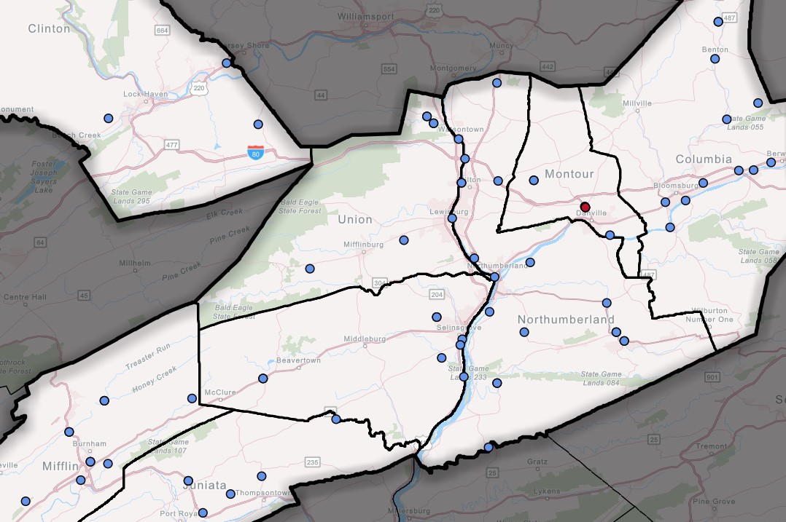
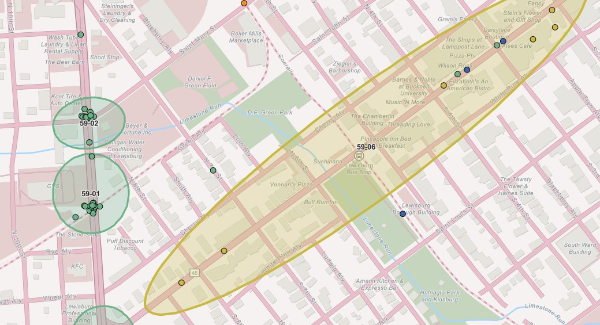
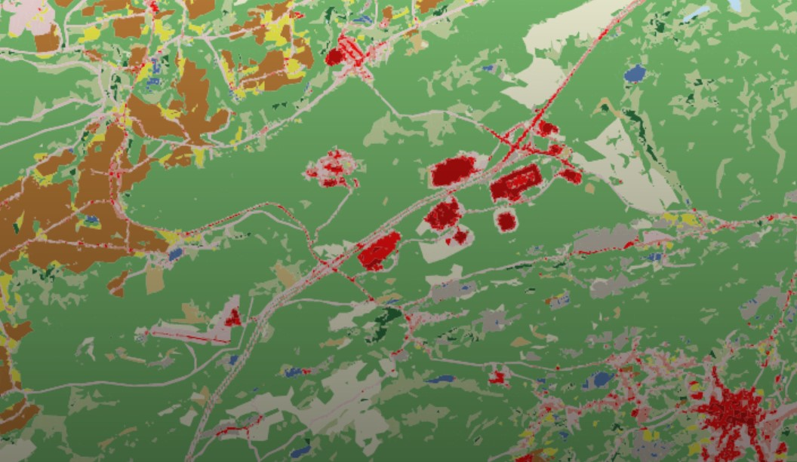
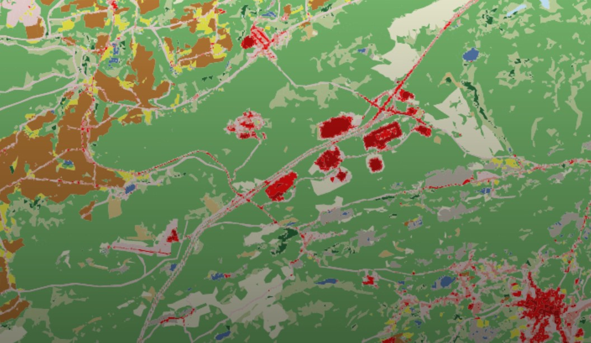

Click on the interactive cards below to learn more about a webmap, cartographic design, report/publication, or poster.
2024 Webmap
2024 Webmap

2024 Webmap
2024 Webmap Report
2024 Webmap Cartography Poster
2024 Webmap

2024 Webmap Report
 2023 Webmap Cartography
2023 Webmap Cartography

2022 Webmap Report
2022 Webmap
2021 Webmap
2021 Cartography
2020 Report Cartography Poster
2020 Cartography Poster
2023 Webmap Cartography
2023 Webmap Cartography

2022 Webmap Report
2022 Webmap
2021 Webmap
2021 Cartography
2020 Report Cartography Poster
2020 Cartography Poster
SEDA-COG Zoning Map Viewer & Local Ordinance Catalog
Local Technical Assistance Program Activity Dashboard
SEDA-COG MPO TIP Modifications Dashboard
Environmental Justice Benefits & Burdens Analysis
SEDA-COG Regional Trail Demand Report
Borough of Berwick, PA Community Report Dashboard
STC Public Comment Cluster Analysis Map Viewer
2023 Webmap Cartography